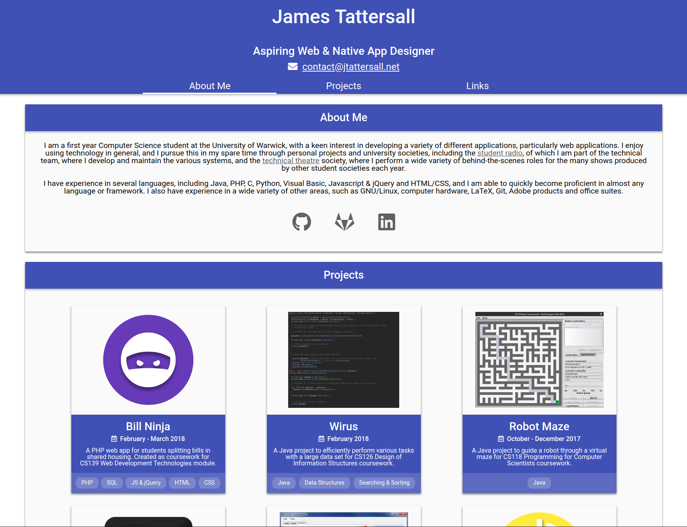
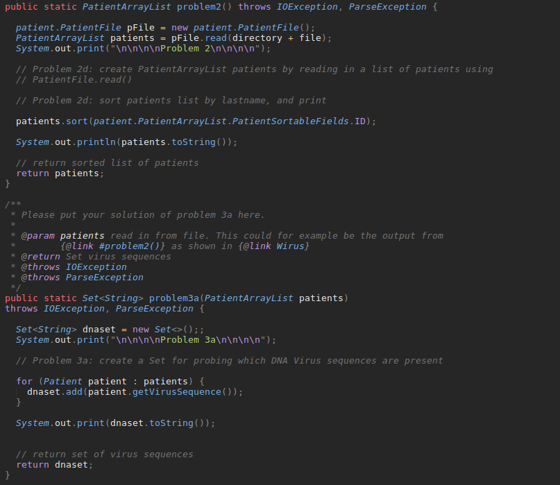
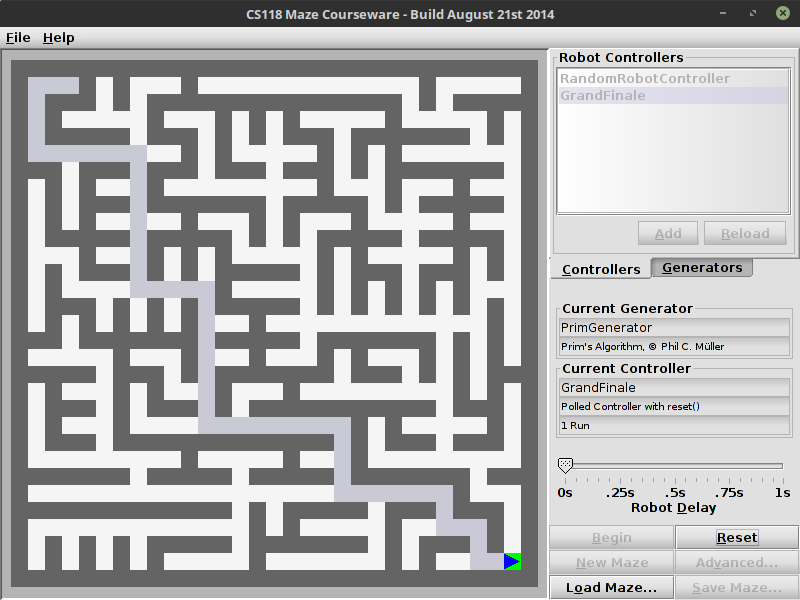
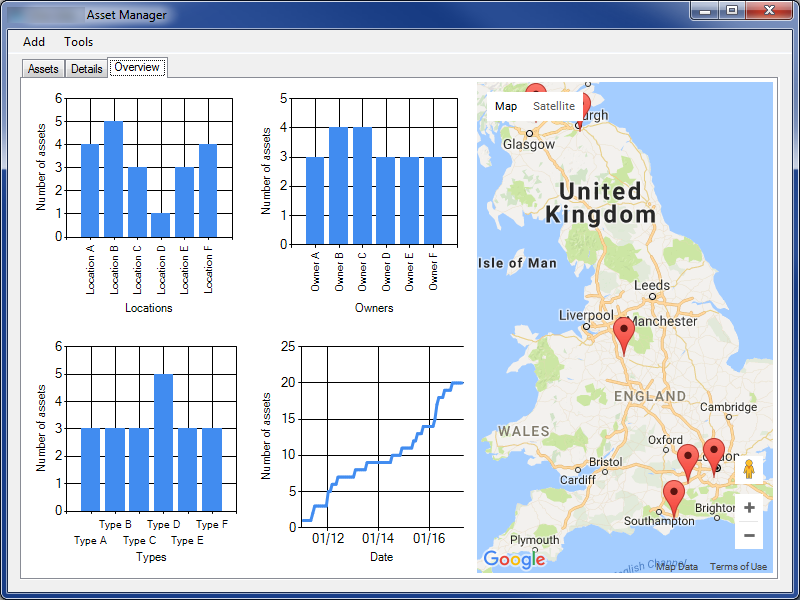
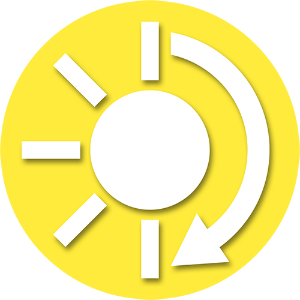
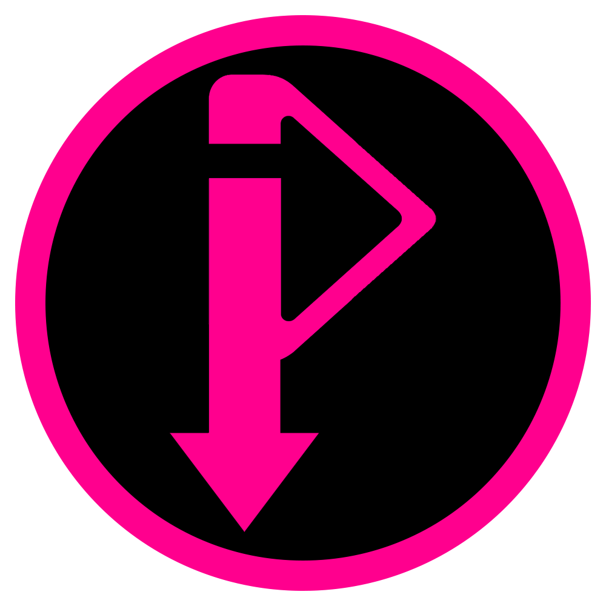

I am a first year Computer Science student at the University of Warwick, with a keen interest in developing a variety of different applications, particularly web applications. I enjoy using technology in general, and I pursue this in my spare time through personal projects and university societies, including the student radio, of which I am part of the technical team, where I develop and maintain the various systems, and the technical theatre society, where I perform a wide variety of behind-the-scenes roles for the many shows produced by other student societies each year.
I have experience in several languages, including Java, PHP, C, Python, Visual Basic, Javascript & jQuery and HTML/CSS, and I am able to quickly become proficient in almost any language or framework. I also have experience in a wide variety of other areas, such as GNU/Linux, computer hardware, LaTeX, Git, Adobe products and office suites.
Projects

jtattersall.net
June 2018 - Present
This very website. Created to provide an online portfolio for information about my interests and projects.
HTML
CSS
JS & jQuery
Bill Ninja
February - March 2018
A PHP web app for students splitting bills in shared housing. Created as coursework for CS139 Web Development Technologies module.
PHP
SQL
JS & jQuery
HTML
CSS

Wirus
February 2018
A Java project to efficiently perform various tasks with a large data set for CS126 Design of Information Structures coursework.
Java
Data Structures
Searching & Sorting

Robot Maze
October - December 2017
A Java project to guide a robot through a virtual maze for CS118 Programming for Computer Scientists coursework.
Java
CueBright
August 2017 - Present
A Windows application to control the colour and brightness of a Corsair CUE-enabled keyboard using command-line arguments.
Visual Basic
3rd Party APIs

Asset Manager
October 2016 - March 2017
A Windows application to track and monitor company assets. Created for Computer Science A Level coursework.
Visual Basic
SQL
Web APIs
Report

AutoBright
August 2016 - Present
A Windows application to dim monitor backlights on a schedule determined by sunrise/sunset times via DDC/CI.
Visual Basic
DDC/CI
Windows APIs

easy_get_iplayer
January 2016 - Present
A Windows application to provide an easy-to-use GUI for the get_iplayer project, intended for use as a physical recorder alternative.